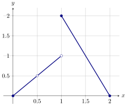
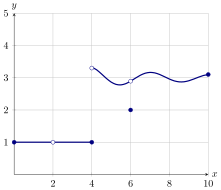
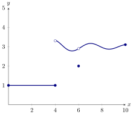

Continuity is defined by limits.
Limits are simple to compute when they can be found by plugging the value into the
function. That is, when We call this property continuity.
A function is
continuous at a point if
Consider the graph of below

Which of the following are true?
is continuous at is continuous at is continuous
at
It is very important to note that saying
“a function is continuous at a point ”
is really making three statements:
-
(a)
- is defined. That is, is in the domain of .
-
(b)
- exists.
-
(c)
- .
The first two of these statements are implied by the third statement.
Find the discontinuities (the points where a function is not continuous) for the
function described below:

To start, is not even defined at , hence cannot be continuous at .
Next, from the plot above we see that does not exist because Hence , and so is not
continuous at .
We also see that while . Hence does not exist, and so is not continuous at
.
Building from the definition of continuity at a point, we can now define what it
means for a function to be continuous on an open interval.
A function is
continuous on an open interval if for all in .
Loosely speaking, a function is continuous on an interval if you can draw the
function on that interval without any breaks in the graph. This is often referred to as
being able to draw the graph “without picking up your pencil.”
Continuity of Famous Functions The following functions are continuous on the given
intervals for a real number and a positive real number:
-
Constant function
- is continuous on .
-
Identity function
- is continuous on .
-
Power function
- is continuous on .
-
Exponential function
- is continuous on .
-
Logarithmic function
- is continuous on .
-
Sine and cosine
- Both and are continuous on .
In essence, we are saying that the functions listed above are continuous wherever
they are defined, that is, on their natural domains.
Compute:
The function is of the form for a real number . Therefore, is continuous
for all real values of . In particular, is continuous at . Since is continuous at , we
know that . That is,
Left and right continuity
At this point we have a small problem. For functions such as , the natural domain is .
This is not an open interval. What does it mean to say that is continuous at
when is not defined for ? To get us out of this quagmire, we need a new
definition:
A function is
left continuous at a point if .
A function is right continuous at a point if .
Now we can say that a function is continuous at a left endpoint of an interval if it is
right continuous there, and a function is continuous at the right endpoint of an
interval if it is left continuous there. This allows us to talk about continuity on closed
intervals.
Here we give the graph of a function defined on .

What are the largest intervals of continuity for this function?
and , , and , , and ,
, and , , and , , and , , and
Notice that our function is left continuous at so we can include in the
interval . Four is not included in the interval because our function is not right
continuous at . Similarly, our function is neither right or left continuous at
, so is not included in any intervals. Our function is left continuous at
and right continuous at so we included these endpoints in our intervals.